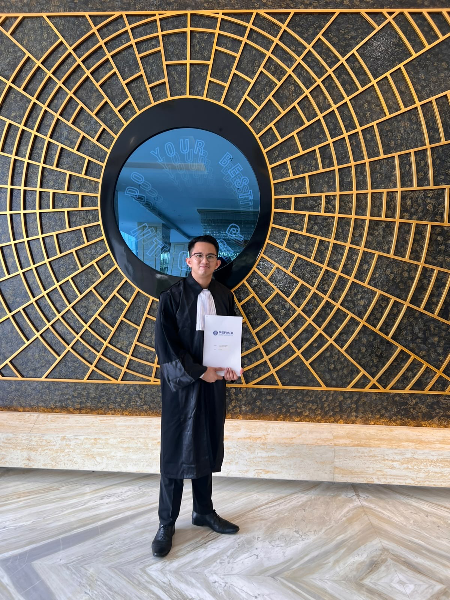
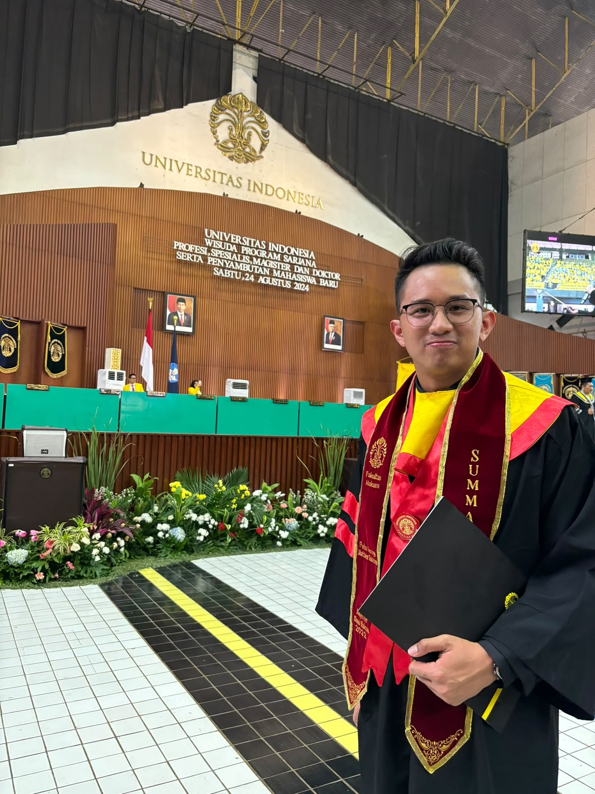

Putu Simbolon Law Office focuses on complex legal issues at the intersection of international economic law, Indonesian regulatory law, international trade, environmental regulation, and commercial disputes.
The Office combines legal practice, doctrinal research, regulatory analysis, and strategic legal reasoning to assist individuals, businesses, institutions, researchers, and other stakeholders dealing with legally complex and cross-border matters.
Our approach is grounded in rigorous legal research, careful interpretation of legislation and international instruments, and an understanding of how legal rules operate within broader economic, regulatory, and institutional systems. Putu Simbolon Law Office is founded on the proposition that complex legal problems require more than procedural legal advice — the Office therefore adopts a research-oriented approach to legal practice, particularly for matters involving multiple legal regimes, regulatory interaction, international obligations, or unsettled questions of law.
The Office is particularly interested in matters where domestic regulation intersects with international economic relations and environmental objectives.
Matthew Simbolon is an Indonesian advocate and legal researcher specializing in international economic law, international trade law, environmental regulation, and regulatory and commercial law.
He holds a Master of Law (LL.M.) in International Trade Law from Universitas Indonesia, where he graduated summa cum laude with a perfect GPA of 4.00/4.00 — becoming the first student in the 100-year history of Universitas Indonesia's Faculty of Law to achieve a perfect score in its Master of Law program, an achievement recognized with the Sudargo Goutama Award. He holds a Bachelor of Law (LL.B.) from Universitas Kristen Indonesia, also graduating summa cum laude (GPA 3.96/4.00). He has further pursued a Micro-Master in International Legal Studies at UCLouvain (Belgium), and coursework in intellectual property law and policy at the University of Pennsylvania and contract law at Harvard Law School.
His academic and professional work focuses on the relationship between trade, environment, regulation, and sustainable development. His research interests include the World Trade Organization (WTO), Multilateral Environmental Agreements (MEAs), international investment law, trade-related environmental measures, customs and trade remedies, and the extraterritorial effects of environmental regulation. His full body of published research, speaking engagements, and academic recognition is detailed on the Publications page.
"Rigorous research. Strategic analysis. Practical legal solutions."
The Office approaches legal problems through a combination of doctrinal precision, strategic reasoning, and practical applicability.
Prior to founding the Office, Matthew practiced for two years as an associate lawyer at a Jakarta law firm specializing in WTO and international trade law, where he:
He currently serves as legal counsel to a private investment company operating in Bali, advising on corporate, property, and commercial matters.

Bar Admission: Advocate, Indonesian Advocates Association (PERADI)

Indonesian and foreign companies facing complex regulatory, trade, customs, environmental, or commercial issues.
Companies affected by international trade regulations and market-access requirements.
Investors requiring Indonesian regulatory and investment-law analysis.
Specialized legal research and second-opinion support for complex matters.
Legal research and regulatory analysis.
Commissioned legal research, comparative-law research, and policy analysis.
Legal research concerning environmental regulation, sustainability, biodiversity, and international law.